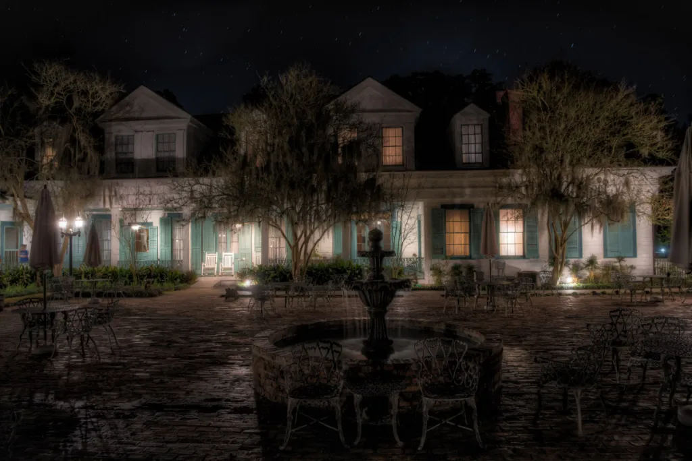
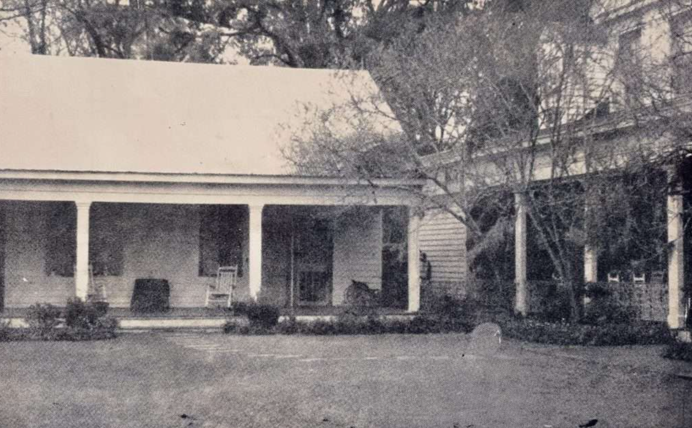

| |
Haunted Places | Paranormal Activities | Exorcisms & Possessions | Social Platforms | Horror Movies | Common Signs | Contact Us |
|---|
The Myrtles Plantation HomeSt. Francisville, Louisiana, United States |
With its rich history dating back to the early 19th century and its reputation as one of the most haunted locations in America, the Myrtles Plantation is a site steeped in sorrow, tragedy, and mystery.

Located just a few miles from the Mississippi River, the Myrtles Plantation home sits on a hill, facing eastward. It sits at the end of a winding, tree-lined road, framed by towering oak trees draped in Spanish moss.
Historian Tiya Miles describes seeing buzzards circling the grounds on her first visit to the plantation. In southern folklore, buzzards represent fear, death, and futility but can also mean rebirth and revival. They represent the duality of death and life.
If you were to read any tourism guides about the Myrtles, you would see allusions to stories about countless deaths, ten murders, twelve restless spirits, and on-site paranormal investigations. The plantation has been featured on both Unsolved Mysteries and Ghost Hunters.
Chloe—the Myrtles Plantation most famous ghost
One of Myrtle’s most famous ghost stories is that of slave girl Chloe.
Chloe was somewhere between 11-15 years old. The legend goes that Chloe’s owner had an affinity for her and allowed her to work in the house instead of the fields. Some stories say he had a romantic interest in the little girl. For some reason or another, he eventually lost interest in Chloe, and she was afraid she’d have to go back to the fields.Fearful of her fate, she would listen in on the family’s conversations, listening for her name to be brought up. One day she was caught eavesdropping by the father of the house. He was so angry he had one or both of the girl’s ears cut off. Stories vary. Chloe was allowed to wear a green turban on her head to hide the mutilation.
After her cruel treatment, Chloe was set on revenge. So on the 9th birthday of one of the family’s daughters, she baked a birthday cake. She added a special ingredient—poisonous oleander leaves. Her plan was apparently not to kill the family but just make them ill. Healers were revered in southern society, and Chloe hoped to nurse the sick family back to health and, while doing so, cement her chances of being able to stay in the house. Unfortunately, the dose was lethal, and the woman of the house and her children all died.
Hoping for protection, Chloe told the other slaves what she’d done. They were afraid of being implicated in what she’d done, so they killed her. Her body was thrown into the Mississippi River.

“Chloe” at The Myrtles Plantation. Photo: The Moonlit Road
The violent death of Chloe is said to have left her restless spirit wandering the plantation, seeking either revenge or redemption. Her presence is frequently reported by visitors. Some have described seeing her apparition; others claim to hear the sounds of her mournful cries while walking the plantation grounds.
Priestess Cleo
Another popular story about the Myrtles Plantation is about a voodoo priestess named Cleo. According to the legend, Cleo was summoned to heal one of the owner’s children. The 3-year-old had contracted yellow fever and was close to death. Cleo spent days trying to heal the little girl, but she ultimately died on January 29, 1861. The little girl’s father, furious over Cleo’s failure, had her publicly executed.
Today, the spirits of both Cleo and the little girl are said to haunt the plantation. The girl’s deathbed remains in the home. Visitors have claimed to see the bed rise and shake violently.
While the legends of Chloe and Cleo have driven paranormal enthusiasts to the plantation, they’re both most likely just made-up folklore tales. Stories meant to increase interest and drive traffic to the home, which is now a bed and breakfast.
The Woodruff Family
After Bradford’s death in 1808, the land and home were passed to Elizabeth. She ran Laurel Grove plantation for several years, eventually hiring her son-in-law. Clark Woodruff was a Connecticut native, a Civil War veteran, and a lawyer. He married Bradford’s daughter Sarah Mathilda on November 19, 1817. They would go on to have three children, Cornelia Gale, James, and Mary Octavia. Woodruff and Sarah not only took over the operations of the plantation; they expanded its holdings, purchasing more land and planting over 600 acres of indigo and cotton. By 1830, the plantation owned around 4,000 acres.
Ghosts at the Myrtles Plantation
While Chloe and Cleo are the most infamous of the Myrtles’ restless spirits, there are several other ghosts that are said to haunt the grounds.
The spirits of Sarah, Cornelia, and James Woodruff are said to be some of these spirits. Visitors often report hearing disembodied voices, especially those of children, laughing and playing in the upstairs rooms where the family once lived. These voices are, of course, typically heard at night.
William Winter’s spirit is also said to be seen and heard on the main staircase. Visitors claim they have seen his apparition on the staircase, and others have reported hearing loud footsteps through the hall.
Beyond The Veil |
||
|---|---|---|
|
Explore the unexplained and discover mysteries that challenge the ordinary. |
||
|
||
|
|